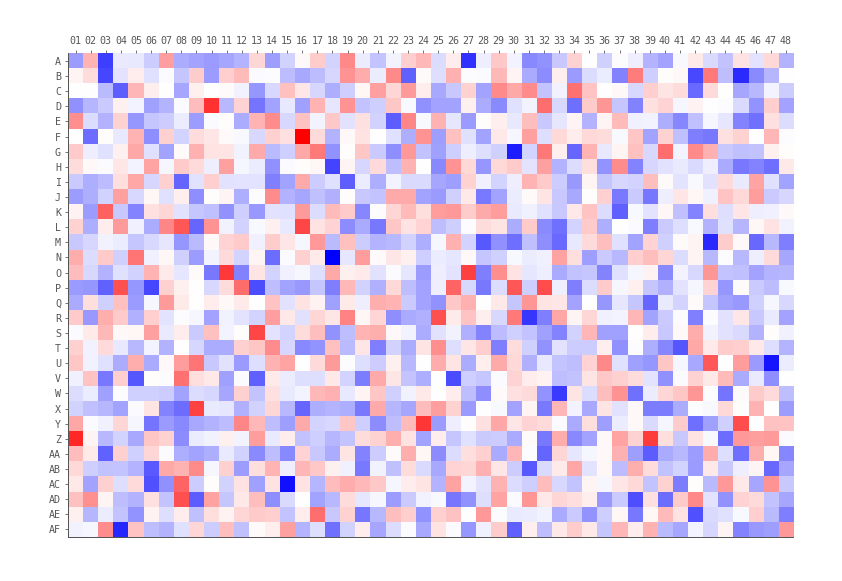

Wells
Creating well labels from row and column positions
If we have row and column positions, we can convert these into well-labels.
from string import ascii_uppercase
def row_col_to_well(row: int, col: int) -> str:
return f"{ascii_uppercase[row-1]}{col:02}"
Row and column positions from well labels
def well_to_row_col(well: str) -> tuple[int, int]:
row = ord(well[0].upper()) - 64
col = int(well[1:])
return row, col
The strange thing here is ord(..) - 64 , what is ord, and why subtract 64?
ord() converts a character into it's unicode integer representation, and for
unimportant reasons "A" is 65. So if you want A = 1, B = 2, etc, subtract 64.
Instead of just returning a tuple, we can use a NamedTuple, so we can access
the row and column values by name, rather than position.
from typing import NamedTuple
class Well(NamedTuple):
label: str
row: int
column: int
def make_well(well: str) -> Well:
row, column = well_to_row_col(well)
return Well(well, row, column)
Zero padding well labels
Wells are typically zero-padded, such as "A01" rather than "A1", but we sometimes have to convert well labels between the two.
This uses python string formatting, which can handily format integers as strings with zero padding for us.
So the magic is done in {col:02}. This means the col number, and everything
after the colon is the fomatting specifications, in this case we want 2 digits,
zero-padded if necessary :02.
Unpadding wells is almost identical, except we don't specify any special formatting
in {col}.
Generating a well labels
If we wanted to generate all the well labels in a 384-well plate:
from string import ascii_uppercase
wells = [f"{r}{c:02}" for r in ascii_uppercase[:16] for c in range(1, 25)]
It's worth noting that python's range(1, 25) function is not inclusive of the
final number in the sequence, that's why we went to 25 and not 24.
Wells from 1536 well plates
A 1536 well plate has 48 columns and 32 rows. The key difference is the 32 rows which cannot be represented as a single alphabetical character. The most common 1536 well plate formats have rows which range from A-Z, and then continue from AA until AF. So our previous python functions will break with wells from a 1536-well plate.

from string import ascii_uppercase
def row_col_to_well(row: int, col: int) -> str:
if row <= 26:
row_letter = ascii_uppercase[row - 1]
else:
row_letter = "A" + ascii_uppercase[row % (26 + 1)]
return f"{row_letter}{col:02}"
We now can't assume the first character of the well label corresponds to the
row, it might be one character (A-Z), or 2 character (AA-AF). But we can index
the well label starting from the end, so we never have to worry about that. So
the last 2 characters (well[-2:]) are always the column (if zero-padded),
and from there until the start of the well-label (well[:-2]) is the row, whether it's
1 character or 2.
We then need to convert the row character(s) into an integer. Before we used
the ord() function to convert the character into a numerical representation.
Now we have to handle either "A" or "AA", which means either row 1 or row 27.
The simplest way is to check the length, if it's only 1 character, treat it the
usual way, if it's 2 characters, get the number of the last character and add 26
(or to save an operation, subtract 38 instead of the usual 64 from the ord()
function).
def well_to_row_col(well: str) -> tuple[int, int]:
col = int(well[-2:]) # last 2 characters as an integer
row_char = well[:-2] # up until the last 2 characters
if len(row_char) == 1:
row = ord(row_char.upper()) - 64
else:
row = ord(row_char[-1].upper()) - 38 # (65 - 26 = 38)
return row, col
We could also solve this issue using regular expressions but they're usually more trouble than they're worth.
Sorting 1536 well labels
With 96 and 384 well plates we can sort well-labels alphabetically, however with 1536 well plates this does not work as expected. One way around this is to extract the row and column indices from the well label first, then sort by row and column.
# construct example data
wells = ["A01", "AA01", "AF01", "Z01"]
vals = [1, 2, 3, 4]
df = pd.DataFrame({"well": wells, "data": vals})
# generate row and column labels
rows, cols = zip(*[well_to_row_col(i) for i in df["well"]])
df["row"] = rows
df["col"] = cols
# sort data by row and column
df_sorted = df.sort_values(["row", "col"])
# maybe drop "row" and "col" columns